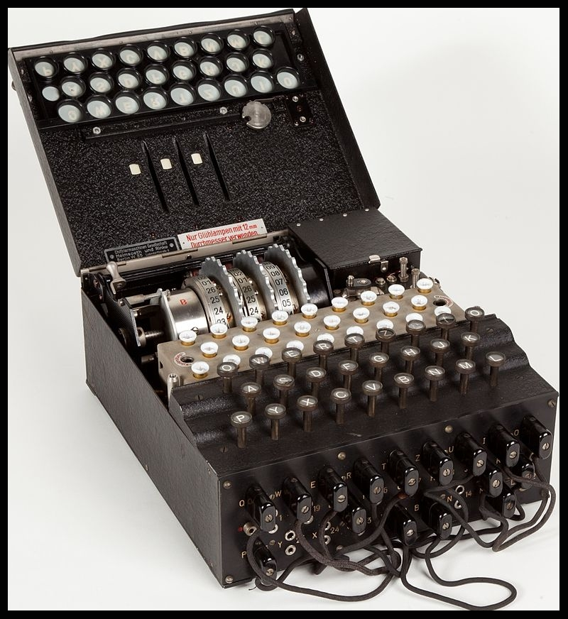
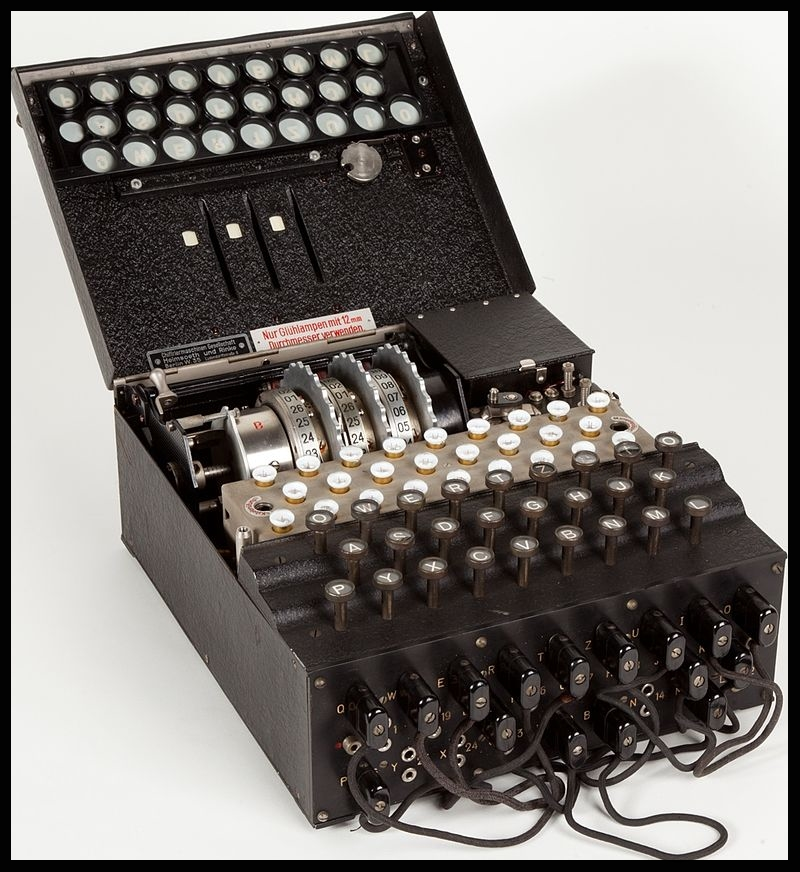
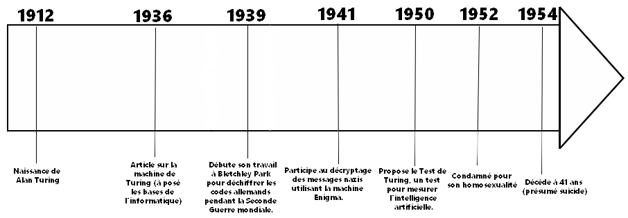
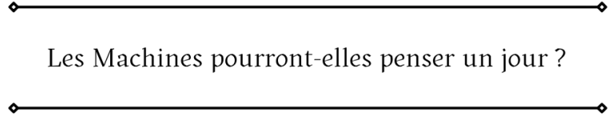
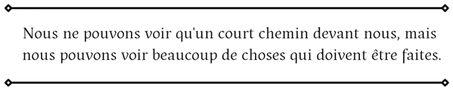
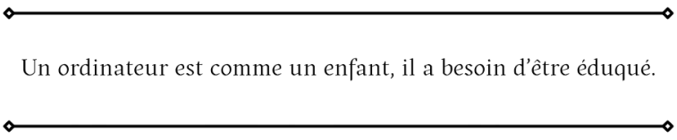

Alan Turing

Qui était t-il ?
Alan Turing (1912-1954) était un mathématicien britannique connu pour avoir posé les bases des ordinateurs modernes. Pendant la Seconde Guerre mondiale, il a travaillé au Bletchley Park, où il a réussi à déchiffrer les codes secrets des nazis grâce à la machine Enigma, ce qui a aidé à raccourcir la guerre. Après la guerre, il a aussi travaillé sur des idées qui ont mené à l'intelligence artificielle. En 1952, il a été condamné pour son homosexualité, et il est mort en 1954 dans des circonstances mystérieuses. Aujourd'hui, il est reconnu comme un pionnier de l'informatique et un héros.
Ses découvertes en informatique
Alan Turing est considéré comme l'un des créateurs de l'informatique moderne. Il a inventé la machine de Turing, un modèle théorique qui a montré comment les machines pouvaient résoudre des problèmes en suivant des instructions. C'est le principe de base des ordinateurs d'aujourd'hui.
Il a aussi imaginé l'intelligence artificielle et créé le test de Turing pour
voir si une machine pouvait se faire passer pour un humain en conversation.
Ses idées sont toujours utilisées aujourd'hui dans la conception des
ordinateurs et l'IA.
Alan Turing et la Seconde Guerre Mondiale
Pendant la Seconde Guerre mondiale, Alan Turing a joué un rôle crucial en
travaillant à Bletchley Park, le centre de décryptage britannique.
Il a réussi à casser le code de la machine Enigma, utilisée par les nazis pour envoyer des messages secrets.
Grâce à ses travaux, les Alliés ont pu intercepter et comprendre ces messages, ce qui a permis de raccourcir la guerre et de sauver des millions de vies.
 

En savoir plus sur sa biographie :
- La page Wikipédia sur Alan Turing : https://fr.wikipedia.org/wiki/Alan_Turing
- Une biographie un peu plus courte : https://www.bibmath.net/bios/index.
php?action=affiche&quoi=turing
Frise chrono sur Alan Turing

Quelques citations importantes
C'est la question principale que Turing se posait en travaillant sur l'intelligence artificielle.
Il voulait savoir si, un jour, les machines seraient capables de réfléchir comme des humains.
Turing savait que la technologie de son époque avait encore beaucoup à développer.
Il voyait déjà tout ce qui restait à accomplir pour améliorer les ordinateurs et aller plus loin.
Il compare les ordinateurs à des enfants pour montrer qu'ils doivent être "appris" ou programmés pour fonctionner correctement, tout comme on enseigne aux enfants.



Quelques vidéos pour en savoir plus :
Alan Turing et l'ENIGMA par National Geographic France
L'homme trahi par le pays qu'il a sauvé pendant la guerre par Mamytwink
Quiz sur Alan Turing
En quelle année est né Alan Turing ?
Quel est le principe de base de la machine de Turing qui a influencé la création des ordinateurs ?
En quoi consiste le test de Turing, proposé en 1950 ?
Quelle a été la conséquence du procès d'Alan Turing en 1952 ?
En quelle année est décédé Alan Turing ?
Le saviez-vous ?
- Le test de Turing, créé en 1950, est encore une référence aujourd'hui pour déterminer si une machine peut imiter l'intelligence humaine dans une conversation.
- Turing était un coureur exceptionnel et aurait même pu concourir aux Jeux olympiques s'il ne s'était pas concentré sur son travail en cryptanalyse.
- Une légende urbaine dit que le logo de la pomme croquée d’Apple serait un hommage à Turing, qui serait mort après avoir croqué une pomme empoisonnée. Bien que cela ait été démenti, cette histoire persiste.
- Alan Turing a été condamné pour son homosexualité en 1952, mais il a reçu un pardon royal posthume de la reine Elizabeth II en 2013, reconnaissant son rôle crucial dans la science et l’histoire.
- En 2021, Alan Turing a été choisi pour figurer sur le billet de 50 livres sterling au Royaume-Uni, en reconnaissance de ses contributions scientifiques et de son héroïsme pendant la guerre.